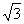
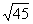
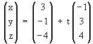

| KANTONSSCHULE REUSSBÜHL |
Maturitätsprüfungen 1996 |
M a t h e m a t i k Typus A/B
Bemerkungen: Jede Aufgabe soll auf einer neuen Seite begonnen werden.
Zeit: Drei Stunden.
Für 40 Punkte wird die Note 6 erteilt.
Viel Glück!
1. Gegeben ist die Funktion f : x →
(4.5 - 8x2) ⋅ ex
a) Diskutiere f bezüglich Nullstellen, lokale Extrema,
Asymptoten und zeichne den Graph für -8 ≤ x < 1 .
b) Berechne den Inhalt der vom Graph von f und der x-Achse
eingeschlossenen endlichen Fläche.
|
9 Punkte |
2. Bei einer Werbeveranstaltung kann der
älteste Besucher aus einer Urne mit 60 Losen, die von 1 bis 60 durchnumeriert sind,
eines oder mehrere Lose ziehen.
Ein Los mit einer durch vier teilbaren Zahl bedeutet den Gewinn eines Geschenkkorbes, ein
Los mit einer durch sechs teilbaren Zahl bedeutet den Gewinn eines Radios. Wie gross ist
die Wahrscheinlichkeit
a) bei einmaligem Ziehen eines Loses beide Gewinne
miteinander zu ziehen ?
b) bei einmaligem Ziehen eines Loses zumindest einen
Gewinn zu erhalten ?
c) bei zweimaligem Ziehen ohne Zurücklegen des ersten
Loses zwei Radios zu gewinnen ?
d) bei dreimaligem Ziehen mit Zurücklegen der Lose
mindestens zwei Geschenkkörbe zu gewinnen ?
e) Wie oft muss ein Besucher ein Los mit Zurücklegen
ziehen, damit die Wahrscheinlichkeit, keinen Gewinn zu erhalten, kleiner als 1 % wird ?
f) Eine ältere Person nimmt insgesamt fünfmal an der
Veranstaltung teil und darf jedesmal ein Los ziehen. Als Zufallsvariable betrachten wir
die Anzahl gewonnener Geschenkkörbe. Berechne für diese Zufallsvariable den
Erwartungswert und die Varianz.
|
9 Punkte |
3. Für welche x ∈ [0; 2Pi] ist der
Term 2 sin2 x + sin x - 1 positiv ?
(exakte Werte angeben !)
|
4
Punkte |
4. Beim Bau eines unterirdischen Stollens sind
folgende Bedingungen zu beachten:
- Der Querschnitt muss ein gleichschenkliges Trapez mit
Flächeninhalt 6 m2
sein.
- Der Neigungswinkel der Seitenwände gegenüber der
Bodenfläche muss 60 Grad betragen.
Wie hoch wird der Stollen (entspricht der Trapezhöhe),
wenn das Querschnitt-Trapez minimalen Umfang haben soll ?
|
5 Punkte |
5. Die Funktionenschar fp(x) = x4
+ 2x3 - 2px + p (p ∈ IR) ist gegeben.
a) Zeige, dass alle Funktionen dieser Schar genau zwei
Wendepunkte haben und gib ihre Koordinaten (in Abhängigkeit von p) an.
b) Für welchen Parameterwert p haben die beiden
Wendepunkte den kleinsten gegenseitigen Abstand ?
c) Die Tangente t im Wendepunkt W2 mit der
grösseren x-Koordinate schneidet die Kurve y = fp(x) in einem
Schnittpunkt Q ≠ W2. Berechne den Inhalt der von dieser
Wendetangente und der Funktionskurve eingeschlossenenFläche (zwischen Q und W2).
d) Setze nun speziell p = 0 . Die Kurve y = f0(x)
und die x-Achse schliessen ein Flachenstück ein. Berechne das Volumen des Körpers, der
entsteht, wenn dieses Flachenstück um die x-Achse rotiert wird.
|
9 Punkte |
6. Bei einem geraden Kreiskegel liegen die
beiden Punkte A(5/1/2) und B(-3/3/0) auf der Penpherie des Grundkreises. Die Länge einer
Mantellinie (von der Kegelspitze bis zu A oder B) beträgt  . Der Mittelpunkt M des Grundkreises liegt auf
der Geraden g: 
a) Berechne die Koordinaten des Kreismittelpunktes M.
Falls a) nicht gelöst werden kann, rechne man in den
folgenden Teilaufgaben mit dem Ersatzpunkt M* (1 /3/2) weiter.
b) Bestimme eine Koordinatengleichung für die
Grundkreisebene G = (ABM).
c) Berechne den Neigungswinkel einer Mantellinie gegenüber
der Ebene G.
d) Ein anderer, schiefer Kreiskegel, dessen Grundkreis mit
dem des geraden Kreiskegels zusammenfällt, hat den doppelten Volumeninhalt des geraden
Kreiskegels. Berechne die Koordinaten der Spitze dieses schiefen Kreiskegels, wenn seine
Spitze auf der y-Achse liegen soll (eine Lösung genügt).
|
9 Punkte |